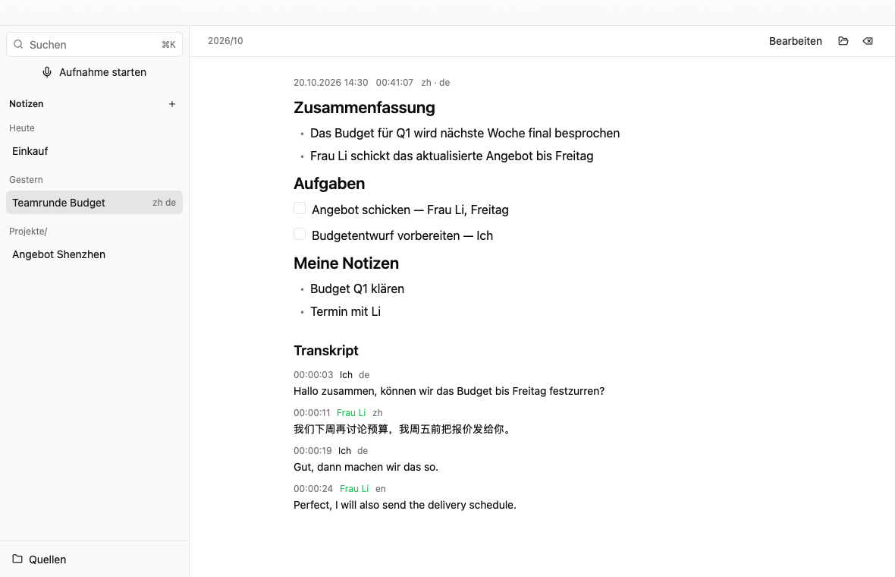
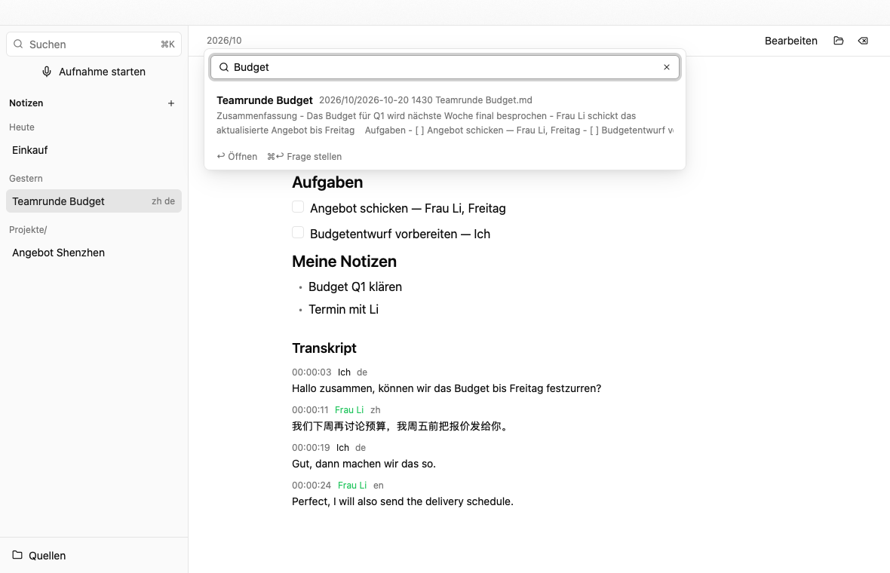
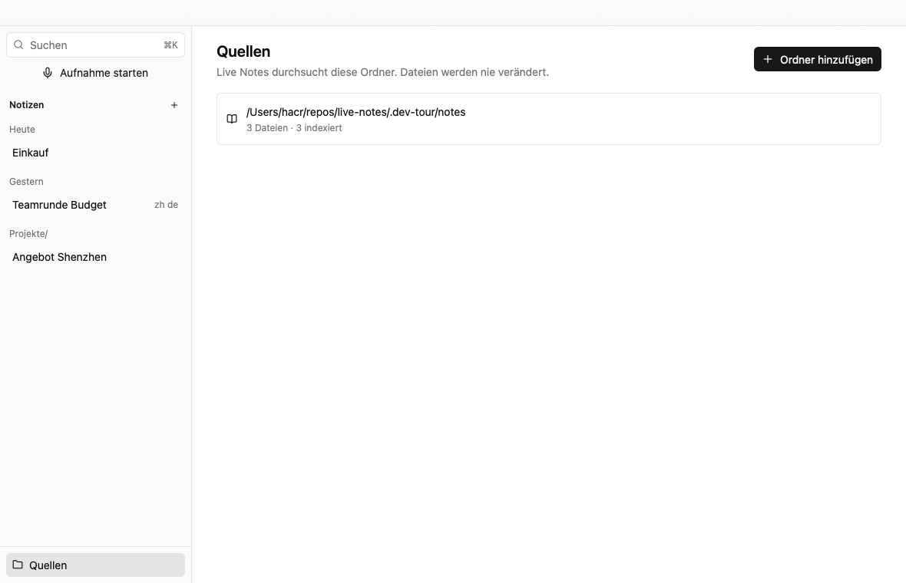

Open Source · macOS · Rust
Live Notes nimmt Mikrofon und Systemton auf, transkribiert auf deinem Mac, erkennt die Sprache jedes Abschnitts und schreibt alles als Markdown-Notiz mit Zusammenfassung und Aufgaben. Audio wird nie gespeichert.
Live in HTML gezeichnet, keine Bildschirmaufnahme. Das Transkript ist echt: Live Notes hat es aus einem Testgespräch in fünf Sprachen geschrieben.
Eine Aufnahme, ein Klick. Der Rest passiert im Hintergrund, und du kannst schon die nächste Aufnahme starten.
Whisper large-v3-turbo läuft lokal. Die Sprache wird pro Abschnitt erkannt, beschränkt auf deine Sprachen. Deutsch, Englisch, Chinesisch, Französisch und Spanisch im selben Gespräch sind kein Problem.
Der Ton bleibt im Arbeitsspeicher und wird nach der Transkription verworfen. Gespeichert wird nur der Text.
Jede Aufnahme wird eine normale Markdown-Datei in deinem Notizordner, mit Zusammenfassung, Aufgaben, deinen eigenen Notizen und dem Transkript. Lesen und bearbeiten direkt in der App.
Während des Gesprächs sucht die App in deinen Notizen und Ordnern und zeigt, was zum Thema passt. Anheften legt es in die Notiz.
Lokale Ordner werden indexiert (Volltext und Bedeutung, EmbeddingGemma auf dem Mac). Fragen werden mit nummerierten Quellen beantwortet.
Fragen, Live-Vorschläge und Zusammenfassung haben je ein eigenes Modell: Gemma 4 über OpenRouter, ein lokales Modell, Ollama oder dein ChatGPT-Plus- oder Pro-Abo.
Schätzungen der App für eine Stunde mit etwa 9000 gesprochenen Wörtern. Die Einstellungen zeigen dieselben Zahlen für deine Auswahl und was du diesen Monat ausgegeben hast.
| Aufgabe | Modell | Braucht | Pro Stunde |
|---|---|---|---|
| Transkription | Whisper large-v3-turbo, lokal | nichts | kostenlos |
| Transkription (optional) | OpenAI gpt-transcribe | OpenAI-API-Schlüssel | ≈ 0,22 $ |
| Transkription (optional) | OpenAI gpt-live-transcribe | OpenAI-API-Schlüssel | ≈ 0,82 $ |
| Live-Vorschläge | Gemma 4 26B-A4B über OpenRouter | OpenRouter-API-Schlüssel | ≈ 0,012 $ |
| Zusammenfassung | Gemma 4 26B-A4B über OpenRouter | OpenRouter-API-Schlüssel | ≈ 0,0016 $ |
| Zusammenfassung | ChatGPT-Abo | Anmeldung mit ChatGPT (Plus oder Pro) | im Abo enthalten |
| Suche | EmbeddingGemma 300M, lokal | nichts | kostenlos |
Fragen kosten mit Gemma 4 etwa 0,0005 $ pro Frage. Ein Monatslimit hält Cloud-Kosten im Rahmen; das ChatGPT-Abo zählt nicht dazu.
Screenshots aus dem automatischen Prüflauf der echten App.



macOS 14.2 oder neuer auf Apple Silicon. Beim ersten Start lädt die App etwa 1 GB Modelle.
brew install llama.cpp
git clone https://github.com/karma-works/live-notes
cd live-notes
cargo run --release -p ln-app